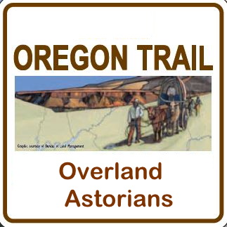

The Overland Astorians headed up the Missouri River in the
spring of 1811. Among the sixty-five people who left the
Arikara villages in present-day South Dakota on horseback
in July were Pacific Fur Company partner Donald McKenzie,
along with their interpreter Pierre Dorian Jr., his Iowa Indian wife
Marie, and their two young sons. As well as scribe Alexander Ross and
hunter John Day.
Astor had chosen partner Wilson Price Hunt, who had no
experience in wilderness travel, to lead the overland group
because of his business expertise. They were
to have followed the trail established by Lewis and Clark,
however, multiple reports of Blackfoot hostilities in the
Three Forks area caused the brigade to transfer their goods
from keelboats and barges to horses at the Arikara Villages.
Their guides had spent
the winter in present day Idaho with fur trader Andrew Henry at
Fort Henry.
The company descended the Snake River in canoes in October,
but they soon lost one man and several boatloads of goods
in the raging water. With winter coming on in late October,
the men decided to abandon the river just east of present-day
Twin Falls, Idaho, and continue on foot. They named this
point Caldron Linn. On the verge of
starvation, they split and reunited into various groups
with eleven men
making their way into present day northern Idaho and enduring
the brutal winter with help from Nez Perce Indians, who fed
them and sold them canoes. That group arrived at Astoria by
way of the Snake and Columbia Rivers in January 1812. In
February, Hunt and thirty-three others reached Fort Astoria
after taking a route north of present-day Ontario.
Astor's grand venture was plagued by mismanagement and
conflicts with Native people but most of all by the War of
1812 and the partners' fear of attacks by British ships.
By the summer of 1813, the
partners at Astoria had decided to abandon the post. Hunt
certainly would have objected, but he was away from the post
on a trading mission. Astor's dream of a lucrative
international fur trade ended with more than sixty men dying
in the effort.
The Astor expedition left a lasting legacy in the route that
Astorian Robert Stuart discovered on his return trip from
Astoria to St. Louis, an easy and low passage over the Rocky
Mountains at South Pass. That key section of what became the
Oregon Trail would greatly benefit tens of thousands of
pioneers headed for Oregon, Utah, or California.